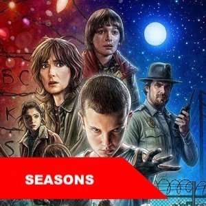
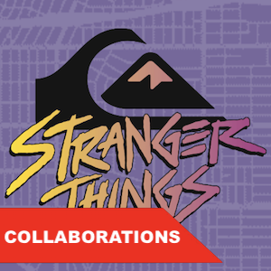
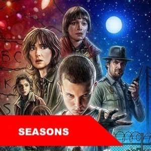
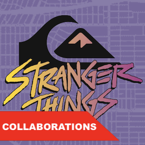

SYNOPSIS
Set in the 1980's in the ficitional town Hawkins, Indiana where myserstious events occur. Eleven, who posseses special abilites, escapes from a secret government lab and meets up with a group of local boys: Mike Wheeler, Will Byers, Lucas Sinclair, and Dustin Henderson. Eleven and the boys have adventures all while saving the town from supernatural events and creatures from the Upside Down such as the Demogorgan.
CAST
Stranger Things stars Millie Bobby Brown as the main character, Eleven. It also features Finn Wolfhard, Gaten Matarazzo, Caleb McLaughlin, and Noah Schnapp who play a group of boys who enjoy playing D&D and eventually befriend Eleven. David Harbour is also featured as the town sheriff, along with Winona Ryder who stars as Will Byers's mother.
WHERE TO WATCH
Stranger Things is a Netflix Orginal with multiple seasons that you can watch with a Netflix subscription.
EXPLORE
 


